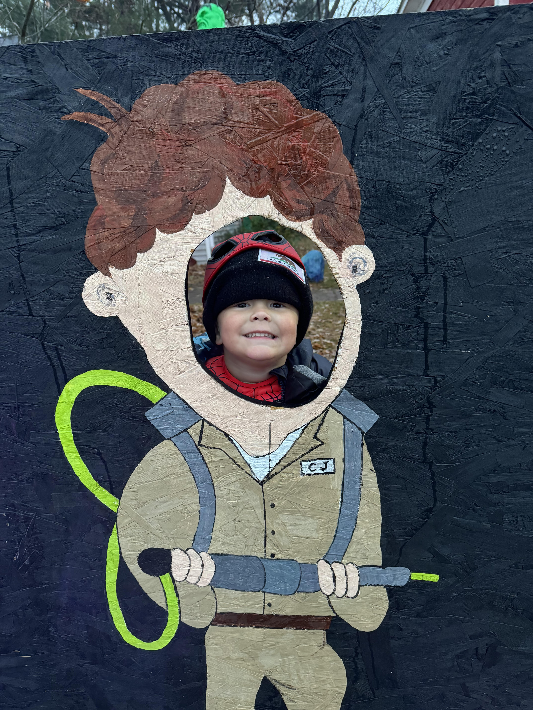
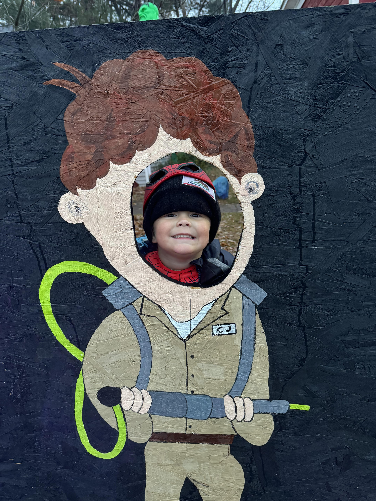

My Family
This is us! My little family is made up my beautiful wife Jessica, and our two awesome kids, Aspen(5) and Oden(3). My wife and I started "dating" when we were just 14 years old. We moved into our first apartment in Eau Claire WI, while my wife was still a senior in high school(she graduated a year after I did in 2015). That is the apartment we came home too after we got married in 2017. By 2019 we had moved back to Chippewa Falls WI, and in May of that year we welcomed Aspen into our family and a short 22 months later we welcomed our boy Oden into the world. Today, we live in our first house in Fall Creek WI, my wife is a hairstylist at Shear Experience in Eau Claire, Aspen started kindergarten this year, and were just living the best life we can.
 
